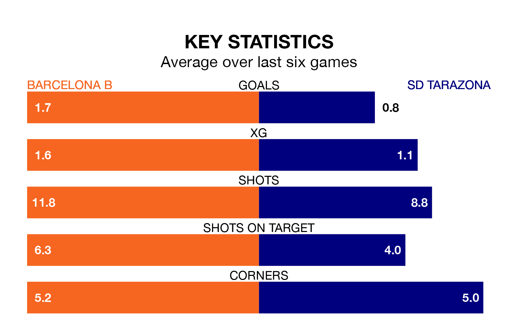

Barcelona B are heavy favourites to keep all three points at home in Saturday's late kick-off against SD Tarazona.
Barcelona B, who sit second in Primera Division RFEF Group 1 with 34 games played, are priced at 1.6 to seal victory at Mini Estadi.
Sitting 10 places and 24 points behind them in the table, Tarazona are 5.5 to win with *Betting Company*, while the draw is at 3.4.
With 54 goals in 34 games so far this season, Barcelona B are the league's third-highest scorers with 1.6 goals per game. And they are conceding at an average rate, letting in 37 goals at a rate of 1.1 per game.
Tarazona, meanwhile, are below average scorers, with 0.7 goals per game, compared to a league average of 1.1. They have conceded 0.8 goals per game.
In Pau Victor, the hosts have the league's sharpest shooter so far this season. He has notched 12 goals in 21 appearances.
His goal rate of one every 157 minutes is much quicker than that of David Cubillas Peña, the away side's top scorer with a goal every 434 minutes, and a total of four goals in 22 games.
Barcelona B are in good form in Primera Division RFEF Group 1, with four wins and a draw from their last six games.
And also with four wins and a draw over that period, Tarazona's form is identical – they have both taken 13 points from 18.
Barcelona B's last match was on April 27, a 3-1 win against SD Ponferradina, with Marc Guiu Paz, Mohamed Aiman Moukhliss Agmir and Victor Delgado getting the goals for Barcelona B.
Tarazona lost 1-0 against Real Sociedad B last time out, on Sunday.
Updated: 12:00 (UTC), 02/05/24